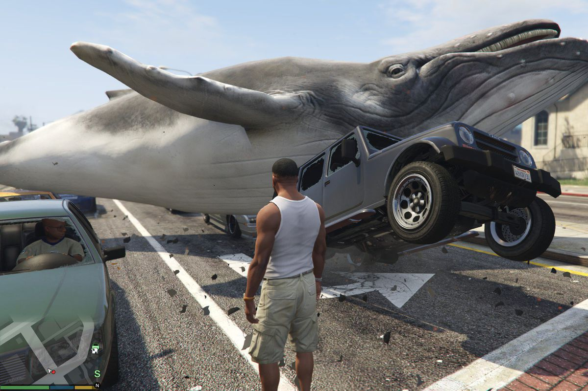

GTA 5
Grand Theft Auto Online is an online multiplayer action-adventure game developed by Rockstar North and published by Rockstar Games. It was released on 1 October 2013 for PlayStation 3 and Xbox 360, 18 November 2014 for PlayStation 4 and Xbox One, and 14 April 2015 for Microsoft Windows; PlayStation 5 and Xbox Series X/S versions are scheduled for late 2021. The game is the online component of Grand Theft Auto V. Set within the fictional state of San Andreas (based on Southern California), Grand Theft Auto Online allows up to 30 players[a] to explore its open world environment and engage in cooperative or competitive game matches.

The open-world design lets players freely roam San Andreas, which includes an open countryside and the fictional city of Los Santos (based on Los Angeles). Players control a silent protagonist in their journey to become a prominent crime figure, building up their own syndicate as they complete increasingly difficult tasks. Set both months before and a few years after the single-player campaign,[b] Grand Theft Auto Online comprises cooperative missions where multiple players complete tasks to advance the narrative. The game also features numerous side missions and events, including the more advanced "Heists", and various businesses that players can purchase with in-game money to generate income.
